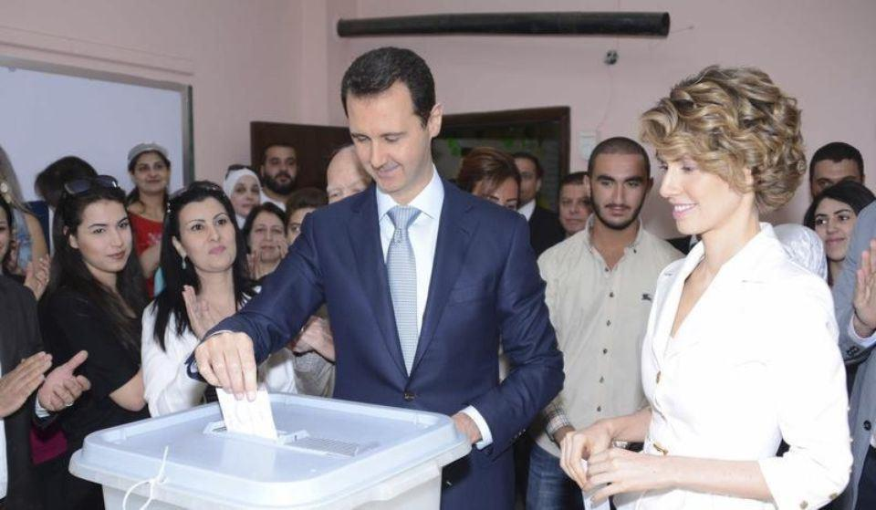
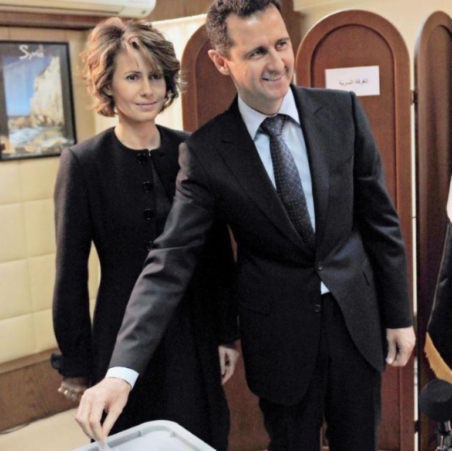
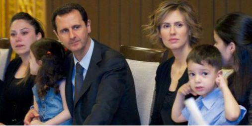

Ces derniers jours, j’ai entendu plusieurs fois sur les ondes radio d’une station périphérique du service public (Radio France, ou Radio Macron, ou Radio mensonge, ou Radio islam, ou Radio antifrançaise, la radio (plus la TV) de propagande du pouvoir en place qui croit faire de l’information ou de la culture et qui ne fait qu’une mauvaise soupe, la même remarque vénéneuse qui revient régulièrement (comme un étrange matraquage des masses) et débitée sur un ton froid et indifférent, selon laquelle « la communauté internationale attend que Bachar el Assad retrouve un peu d’humanité et arrête de gazer ses populations en les bombardant avec des armes chimiques… »
Rien que ça !!
D’abord, quelle communauté internationale ?
Emmanuel Macron se prendrait-il lui-même, tout seul, pour une communauté… ? Il se prend déjà pour un dieu antique (Jupiter)…
Ensuite, j’ignorais que parmi les petites lopettes gauchistes de Radio France il pût en exister qui eussent assez de couilles pour se rendre dans des régions en guerre, au risque de se retourner un ongle, pour y effectuer de véritables reportages de terrain dignes d’un véritable correspondant de guerre à l’ancienne, sérieux et consciencieux.
Nous savons tous que les vrais journalistes et correspondants de guerre travaillent pour les grandes agences de presse qui vendent leurs informations aux médias bêlants. Informations qui sont aussitôt trafiquées, filtrées, édulcorées et adaptées aux directives d’état afin de servir les intérêts de nos dirigeants.
Nous retrouvons donc là les discours habituels des dirigeants français et allemand qui sont les grands promoteurs de l’islam en Europe et qui croient que toute l’Europe va se laisser islamiser jusqu’au trognon sans jamais manifester la moindre réaction. Wait and see… Ce discours qui glorifie et encense l’islam et condamne perpétuellement à de lourdes amendes et à des peines de prison nos compatriotes pour avoir osé défendre les droits de notre pays et de son peuple contre les envahisseurs « remplacistes » (néologisme) musulmans et leurs comparses bobos gauchistes.
On ne sait pas pourquoi, d’ailleurs. Dans leurs cerveaux embrumés et probablement dégénérés, déconnectés du monde et royalement engraissés par les pétrodollars des émirats, ils ont cette obsession pathologique de vouloir islamiser le monde, dans un déni absolu de la raison, de notre histoire et dans le mépris de la paix et des équilibres planétaires…
Mais bien sûr, le président Bachar el Assad est un homme qui passe sa vie à faire la guerre à son propre peuple, à le mépriser, à le maltraiter et à l’exterminer par tous les moyens, y compris par l’usage d’armes chimiques.
Quoi de plus normal ?
Le problème c’est que les gens vraiment couillus et non formatés qui se rendent effectivement dans ces pays pour comprendre ce qui s’y passe et qui questionnent les populations ont des retours très différents de ce que nous assène la dictature de la pensée unique franco-allemande depuis des années.
La population syrienne est certes lasse de la guerre, mais elle aime son président et elle tient à lui. Elle l’a élu et réélu avec une écrasante majorité.
Je ne puis que recommander d’aller voir qui est Bachar el Assad, l’homme et le chef d’état, sur le site Wikipédia.
Quelques extraits :
« Bachar el-Assad se présente comme le rempart d'une nation unie, stable et laïque, face à des bandes de terroristes formés, financés, équipés et soutenus politiquement par des puissances étrangères : Qatar, Arabie saoudite, Turquie, Europe, Etats-Unis et sans doute la France. Il nie avoir donné l'ordre de massacrer les manifestants pacifistes au début du soulèvement. Il nie même l'existence du massacre : « Aucun gouvernement dans le monde ne tue son propre peuple, à moins d'être mené par un fou. »
Le Parlement le propose comme président de la République le 25 juin 2000. Il promet de mettre en œuvre des réformes économiques et politiques en Syrie et est élu président de la République par un référendum qui s'est tenu le 10 juillet 2000, certains Syriens voyant en lui un réformateur qui démocratiserait le pays.
À la suite de son élection, le régime se libéralise timidement, ce qu'on appelle généralement le « Printemps de Damas », qui dure de juillet 2000 à février 2001. Environ 600 des 1 400 prisonniers politiques du pays retrouvent la liberté, des forums regroupant des intellectuels parlant de la démocratisation de la Syrie et de la fin de l'état d'urgence en vigueur depuis 1963 voient le jour.
Il est reconduit à la présidence de la République par 97,62 % des suffrages exprimés lors d'un référendum présidentiel organisé le 27 mai 2007.
Dans un entretien au Wall Street Journal, il explique, le 31 janvier 2011, son projet politique. Selon lui, pour ériger la démocratie, il faut changer la société. Il convient à la fois de développer le sens du dialogue, ce qu'il a entrepris au travers de la presse à partir de 2005, et de créer une classe moyenne, ce qu'il est parvenu à faire dans les grandes villes.
Fin avril 2014, il annonce briguer un troisième mandat à l'élection présidentielle qui a lieu le 3 juin suivant. Bachar el-Assad remporte le scrutin avec 88,7 % des voix d'après le président du Parlement syrien. Il prête serment pour un troisième mandat le 16 juillet 2014. »
Alors, je ne suis certes pas un grand reporter ni correspondant de guerre, mais ce que je peux entrevoir de cet homme dans son parcours depuis sa jeunesse est loin d’être le portrait d’un homme d’excès, d’un psychopathe, d’un fou furieux, d’un dictateur sanglant, d’un Hitler à la petite semaine ou d’un génocidaire de son propre peuple.
Je le vois au contraire comme un homme très sain d’esprit, très équilibré et lucide qui fait tout ce qu’il peut pour le bien de son pays.
Mais il est évident que lorsque que l’on veut instaurer un régime de démocratie et de droits de l’homme dans un pays comme la Syrie, entouré de centaines de millions de musulmans complètement fous fanatiques, égorgeurs dégénérés, sauvages, barbares et exterminateurs commandités et dirigés par d’autres cinglés depuis Riyad ou Al Azhar, la tâche s’avère plus complexe… !
D’autant plus complexe, que pour ce qui est de « s’ingérer dans les affaires d’un état », la Syrie n’a pas manqué d’être complètement submergée par des ingérences innombrables et totalement désintéressées, bien sûr !
Je vous mets au défi de comprendre et de résister à autant d’influences, de pressions et de terrorisme…
Bien évidemment que la Syrie est depuis longtemps la proie de ces terroristes musulmans qui n’ont eu d’autre but que de la détruire, de faire tomber son régime démocratique et d’assassiner son dirigeant. Mais en vain !
Le régime syrien et son président n’ont donc pas eu d’autre solution que de lutter violemment contre ce terrorisme intérieur terriblement envahissant et destructeur et de le frapper partout et aussi puissamment qu’ils le pouvaient.
Et forcément, contrairement à ce que prétendent les imbéciles « nazislamogauchistes » qui nous gouvernent, il n’est pas possible de conduire une guerre civile contre des terroristes installés dans tout un pays sans qu’il y ait des dommages collatéraux ni des victimes innocentes.
Les seuls vrais salopards dans le monde, aujourd’hui, capables de gazer des populations sont les groupes terroristes jihadistes musulmans, les mêmes qui commettent des actes de terrorisme partout dans le monde, qui ont détruit des tours à New-York, qui ont tué des innocents à Nice et qui ont mitraillé Charlie Hebdo et le Bataclan…
Seul l’islam est capable d’utiliser les armes les plus dégueulasses interdites par les conventions internationales.
Ce sont ces musulmans qui ont introduit ces armes chimiques sur le territoire syrien et qui en ont fait usage en accusant Bachar el Assad de l’avoir fait, selon leurs habitudes, en sachant qu’il est impossible de prouver quoi que ce soit dans ces zones de combats.
Et les islamistes servent les intérêts de qui ?
Des USA, de la France et de l’UE. Car nous avons besoin de ces foyers de guerre pour contrôler stratégiquement la situation dans ces régions et pour vendre nos armes, nos avions, nos blindés, nos mines antipersonnelles (que nous n’avons jamais cessé de produire), ainsi que nos armes chimiques, en contrepartie de l’accès au pétrole.
Mais la France fait tout pour abrutir et rendre son peuple naïf et incapable de discernement. On gouverne mieux des moutons.
Ces hommes qui nous gouvernent aujourd’hui n’ont jamais porté les armes, n’ont jamais servi la France, n’ont jamais fait la guerre et n’ont jamais eu à la subir. Ils ne savent rien de la stratégie ni de la chose militaire.
Ce sont tous des outres vides, des estomacs à remplir qui ne sont là que par opportunisme pour s’enrichir aux frais des contribuables. Ils se moquent de la France, lorsqu’ils ne la haïssent pas, comme Macron.
Le pouvoir et la politique c’est beaucoup d’argent.
C’est pourquoi certains dirigeants occidentaux prennent-ils Bachar el Assad comme bouc émissaire.
Parce que, précisément, le bouc émissaire est là pour détourner les regards des vrais traîtres, des vrais criminels, de ceux qui mentent et qui oeuvrent souterrainement à leurs buts de destruction et de crimes contre les peuples qu’ils dirigent et qui leur font naïvement confiance, alors qu’ils devraient s’en méfier comme de la peste.
Ces dirigeants imbéciles qui ne savent même pas l’Histoire semblent avoir oublié que d’autres dirigeants du monde occidental ont eu beaucoup de sang sur les mains avant eux pour parvenir au retour de la paix et de la liberté, lorsque le monde a dû être libéré du joug nazi. On a détruit des villages et des villes dans toute la France et en Europe et de grandes villes comme Dresde, en Allemagne, faisant ainsi des centaines de milliers de morts innocents, tout comme ceux que certains reprochent sans preuves à Bachar el Assad.
Le président Bachar el Assad est sans doute un des dirigeants du monde les plus corrects et les plus éclairés de notre époque, ce qui est loin d’être le cas de nos dirigeants français, allemand et européistes, en général.
Si le président Bachar el Assad se bat aujourd’hui c’est contre ses agresseurs du nord, comme la Turquie avec ses armes chimiques et ces groupes terroristes islamiques, afin de défendre ses frontières. En aucun cas contre la communauté kurde qui lui est alliée, qui a combattu à ses côtés et qui a son soutien.
Il est très important, par ailleurs, de bien souligner que ce que les médias mondialistes aux ordres appellent « rebelles » sont des envahisseurs terroristes musulmans étrangers à la Syrie qui sèment la mort dans ces régions. Ce ne sont absolument pas des rebelles, mais des envahisseurs comme les Nazis chez nous en leur temps.
« Serions-nous devenus fous ? Syrie, c’est Bachar qui protège les Kurdes et les Etats Unis les islamistes 1»
Par ailleurs, Emmanuel Macron, « grand expert mondial en géopolitique », ne manque pas de nous asséner lui-même de façon grotesque la vision du monde qui l’arrange…
« Macron : « Bachar el-Assad est l’ennemi du peuple syrien2 »
Emmanuel Macron ferait bien de prendre conscience qu’en France, aujourd’hui, et pour beaucoup de vrais Français, « c’est lui le plus grand ennemi de la France. »
Avec les USA alliés aux terroristes de DAECH et à la Turquie et l’ONU qui fait son caca nerveux, Macron persiste avec sa pathétique « Ligne rouge » concernant l’usage d’armes chimiques que la France a probablement vendues à Erdogan.
L’argent des ventes d’armes n’a pas d’odeur et ce sont des tractations ultra secrètes. Les armes chimiques et sales existeront jusqu’à l’extinction du dernier être humain.
S’il existe encore aujourd’hui un génocide kurde, suite à d’autres tentatives précédentes de génocide kurde, comme par l’Irak de Saddam Hussein, c’est le fait de l’Iran et du président turc Erdogan qui ne conçoivent pas de gouverner sans éliminer physiquement toute population qui les gêne. Ce qui est une grande tradition de la Turquie dont personne n’a oublié le génocide du peuple arménien qui fit entre 800 000 et plus d’1 million de morts.
Cela dit et écrit, il est vrai qu’il est difficile d’apporter des preuves, dans un sens ou dans l’autre, de ce que l’on avance dans des domaines aussi délicats et complexes que la somme des tensions et des influences géopolitiques des forces en présence dans le monde.
Mais si je dois choisir entre un chef d’état possédant une éducation et une culture à l’occidentale, porté et réélu légitimement au pouvoir par son peuple, soutenu par son peuple et protégeant son peuple de toutes ses forces et de toutes ses convictions, appelant la paix, la démocratie et les droits de l’homme dans son pays, d’une part, face à un autre camp composé de terroristes fanatiques barbares, sauvages, incultes et névrosés, pratiquant toutes les formes de tueries et de destructions en ayant fait couler des fleuves de sang depuis 14 siècles dans le monde entier dans le seul et unique but d’éliminer les autres peuples du monde afin de piller leurs richesses, mon choix est fait et vous le connaissez.

Partager cette page